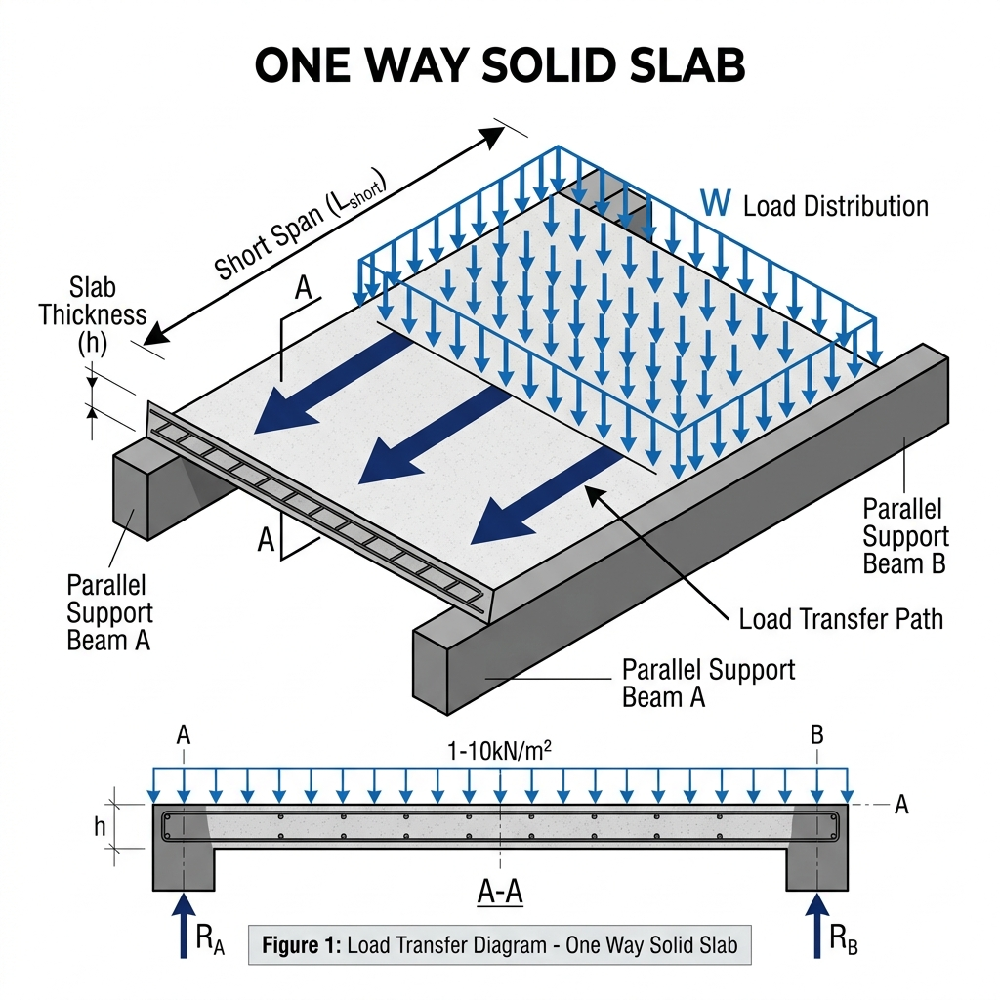
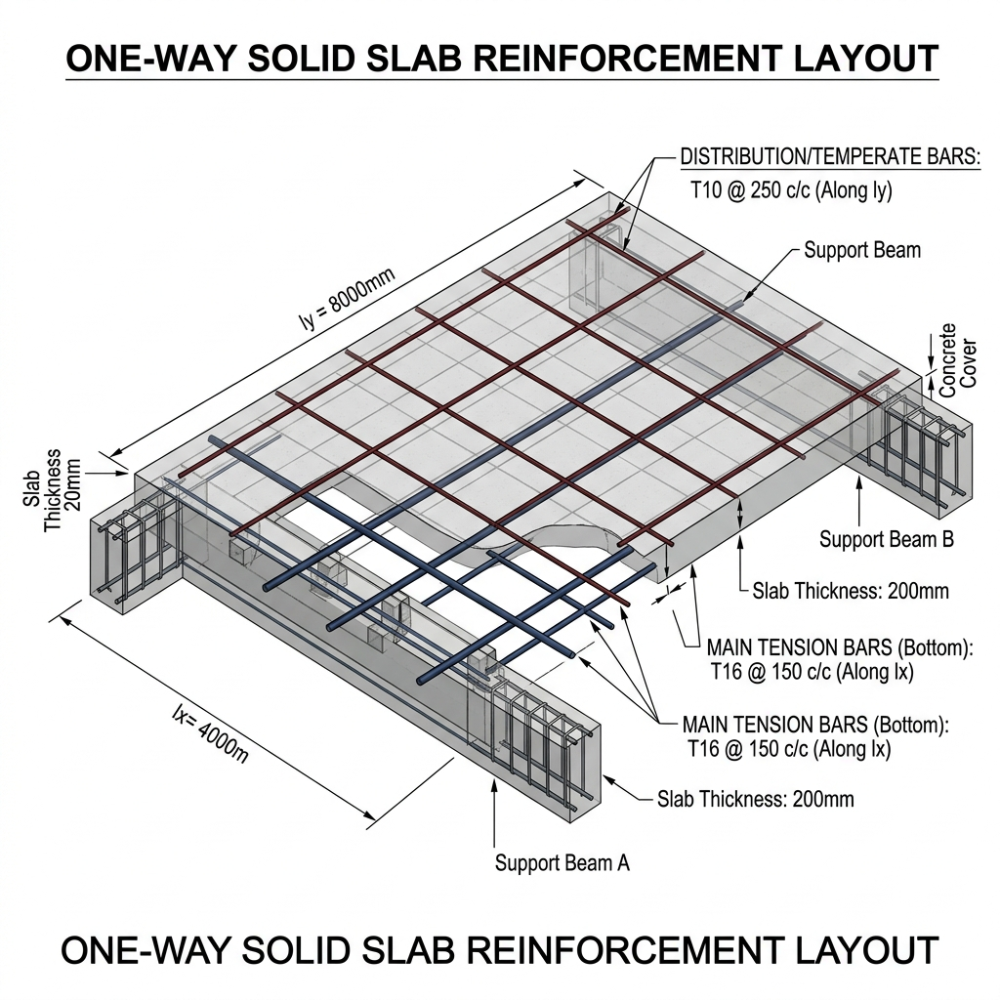

One Way Solid Slab waa nooc muhiim ah oo ka mid ah slab-yada shubka ah, kaas oo qaab gaar ah u shaqeeya marka ay timaado xambaarida iyo gudbinta culayska (load transfer). Waa mid aad loogu isticmaalo dhismayaasha kala duwan, gaar ahaan guryaha caadiga ah iyo meelaha span-da (masaafada) ay yar tahay.
Waa Maxay One Way Slab?
Si fudud, One Way Solid Slab waa slab:
- Laga taageerayo laba dhinac oo qura oo iska soo horjeeda (parallel beams or walls).
- Sidaas darteed, culaysku wuxuu u gudbaa hal jiho oo keliya.
Sida aad ku garan karto(Identification)
Slab-ku wuxuu noqdaa One Way hadii saamiga (ratio) dhinaca dheer iyo dhinaca gaaban ay kuu soo baxdo 2 ama tiro ka wayn:
Ly / Lx ≥ 2
- Ly = Dhinaca dheer (Long Span)
- Lx = Dhinaca gaaban (Short Span)
Sida Culayska Loo Gudbiyo (Load Transfer)
Marka laga hadlayo One Way Solid Slab, fahamka ugu muhiimsan waa sida culaysku u socdo.
Slab-ku wuxuu qaadaa laba nooc oo culays ah oo waa weyn:Dead Load
Culayska slab-ka laftiisa (shubka + finishes/tiles).
Live Load
Culayska is bed-bedela sida dadka, alaabta, iwm.
Culayskan wuxuu ku dhacaa dusha sare ee slab-ka (Surface).
Sida uu u baaho Culayska One Way Slab-ka
One Way Slab: Culayska wuxuu keliya aadaa jihada gaaban (Short Span)

Sawir muujinaya sida culaysku u aadayo jihada gaaban (Short Span).
Qaabka Biraha (Reinforcement)
1. Main Reinforcement
- Waxay maraan dhinaca gaaban (Short Span).
- Waxay qabtaan shaqada ugu weyn: Iyaga ayaa qaada culayska ugu weyn ee slab-ka soo fuulaya.
- Badanaa waa biro ka dhumuc weyn kuwa kale (Tusaale: φ12mm ama φ10mm).
2. Distribution Bars
- Waxay maraan dhinaca dheer (Long Span), waxayna dul saaran yihiin main bars-ka.
- Waxay ka hortagaan dillaaca (shrinkage and temperature cracks).
- Waxay caawiyaan in culaysku uu si siman ugu fido main bars-ka.
- Waa biro ka dhuuban main bars-ka (Tusaale: φ8mm).

Sawir muujinaya farqiga Main Bars iyo Distribution Bars.
Meelaha Loo Isticmaalo
- Wuxuu aad ugu habboonyahay meelaha span-da ay yar .
- Inta badan waxaa loo isticmaalaa guryaha caadiga ah, sida (corridors), balakoonada (verandas/balconies), iyo dabaqyada yaryar.
Gunaanad Kooban
One Way Solid Slab waa slab culayska u gudbiya hal jiho oo keliya, gaar ahaan jihada dhinaca gaaban (short span). Iyadoo Main Reinforcement-ku qaado culayska ugu badan, halka Distribution Bars-ku ay xakameeyaan dillaaca ayna isku hayn siiyaan biraha main-ka. Fahamkan waa aasaaska naqshadaynta shubka ee sugan.

Faallooyinka & Su'aalaha
Ra'yigaaga nala wadaag iyo Hadii aad su'aal qabtid
Ma jiraan wax faallooyin ah illaa iyo hadda. Noqo qofka ugu horreeya ee fikrad ku dara!
"Ku qor Message-ka / Faallada halkan"
Faallo Ku Dar
Faalladaadu waa noo muhiim!